Project Bia
"Without energy, nothing can exist."
Introduction
Energy consumption is a critical aspect of modern society, as it is the basis of economic growth, transportation, and daily life activities. With the global population increasing and energy demands rising, it is essential to understand how energy consumption patterns are evolving. In this data analysis project, we aim to explore energy consumption trends by pulling data from PJM Interconnection LLC. The hourly power consumption data comes from PJM's website and are in megawatts (MW).
Here is a preview of the CSV:
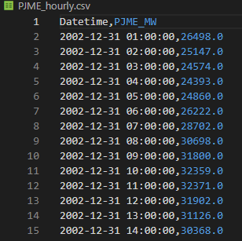Data Cleaning
Before any cleaning can be done we must first procced with an inital analysis of the base data sets to better understand what each columns represents and what data available we have. Once that is done we can select only the pertinent data for this analysis. This helps too reduce the costs of data treatment and helps to focus on the important information.
Here the data set is simple and does not require cleaning, it is composed of only 2 columns: the date-time and the power consumtion in MW.
Analysis
For this analysis we will be using multiple Python librairies and the Prophet model for machine learning:
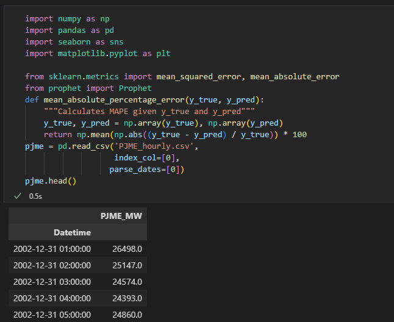The first few lines import the required libraries: NumPy, Pandas, Seaborn, Matplotlib, and Prophet. A custom function called mean_absolute_percentage_error is defined to calculate the mean absolute percentage error between the true and predicted values. We will be using this function at the end to verify our machine learning results.
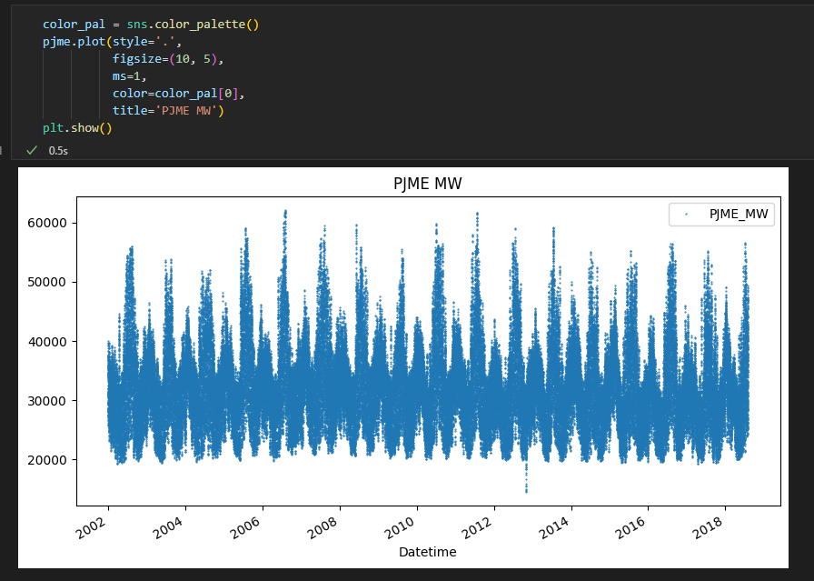Here we create a line plot of the energy consumption over time from the dataframe to see if we can identify a visible pattern or not.
We can confirm a visible pattern but we would like to be able to visualize the information more in depth. We will now procceed to create a new categorical data type using the CategoricalDtype class from Pandas. The create_features function is defined to extract time-series features from the data, such as hour of the day, day of the week, and month of the year. These features are then used to create a new DataFrame X that will be used to train the model.
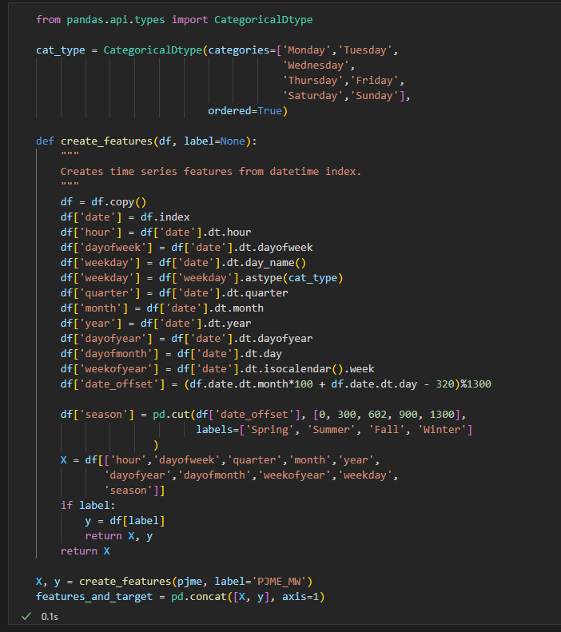We will now plot this new data to visualize patterns by day of the week and by seasons:
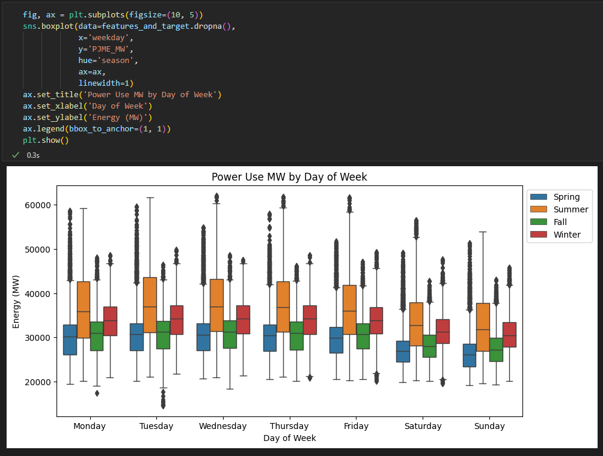Now all thats left to do is prepare and train a machine learning model on this data to be able to recognize the patterns and make predictions.
Machine Learning
First we must prepare the data for training and testing, we will now seperate our data into these 2 groups:
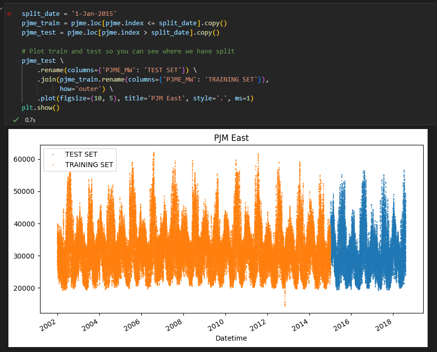Now we will prepare the data to be used with the Prophet model and train it:
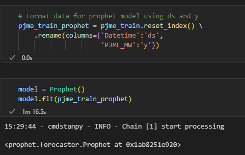Once we have a trained model we can now use it on our data to make forcasts:
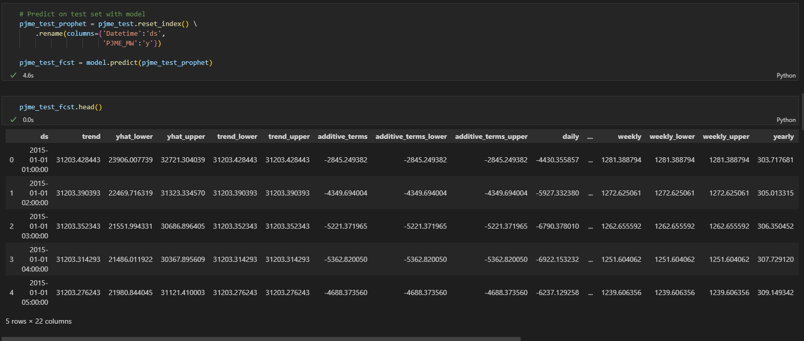We can now plot this data to see if the model recognized any trends:
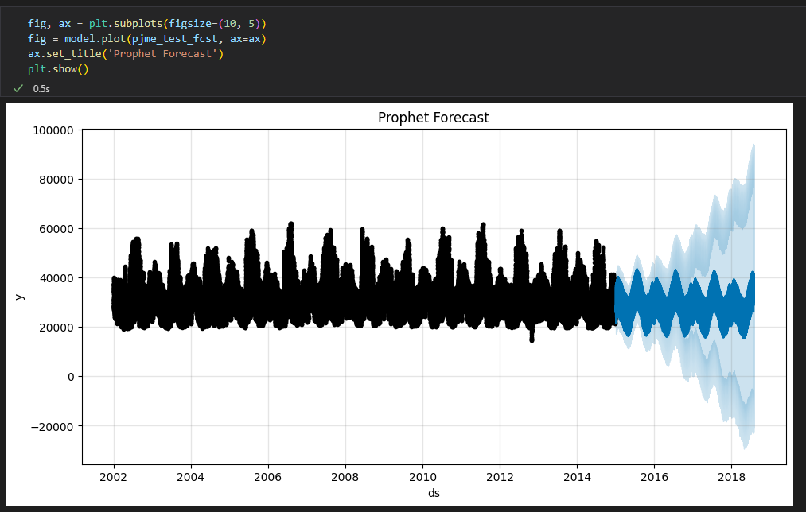 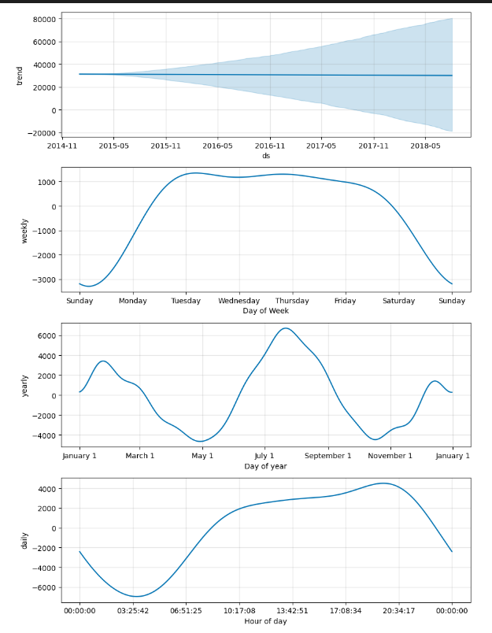Finaly, we will compare our models forcasts vs the actual data(In red is the actual and in blue the forcasts):
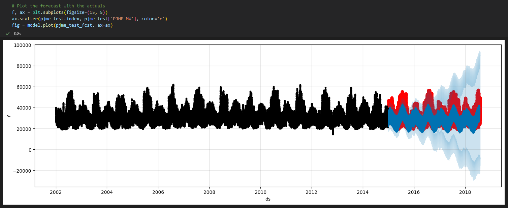To get a numerical value on our models precision we will now use our custom function:
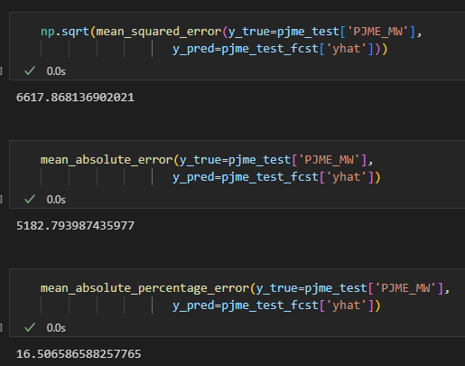This code calculates three different evaluation metrics for a time series forecasting model:
The first line uses the mean_squared_error function from the sklearn.metrics module to calculate the square root of the mean squared error between the true values (y_true) and the predicted values (y_pred) for the PJME_MW variable in the pjme_test dataframe and its corresponding forecast in the pjme_test_fcst dataframe. This metric measures the average difference between the actual and predicted values, with larger values indicating a greater degree of error.
The second line uses the mean_absolute_error function from the same module to calculate the mean absolute error between the true and predicted values. This metric measures the average absolute difference between the actual and predicted values, which provides a more interpretable measure of the forecasting error than the squared error.
The third line uses the mean_absolute_percentage_error function from the keras.metrics module to calculate the mean absolute percentage error between the true and predicted values. This metric measures the average percentage difference between the actual and predicted values, which provides a measure of the relative error in the forecasting performance.
Overall, these three metrics provide different perspectives on the performance of the time series forecasting model and can be used to compare the performance of different models or to evaluate the impact of different parameters or features on the forecasting accuracy.
Conclusion
From the data that was available to us we were able to recognize a pattern and train a machine learning model. However the model isn't the most accurate and can be improved in multiple ways. A larger data set for example will help improve precision and/or tweaking settings in the Prophet model to take into account variables like holidays could also help improve accuracy.